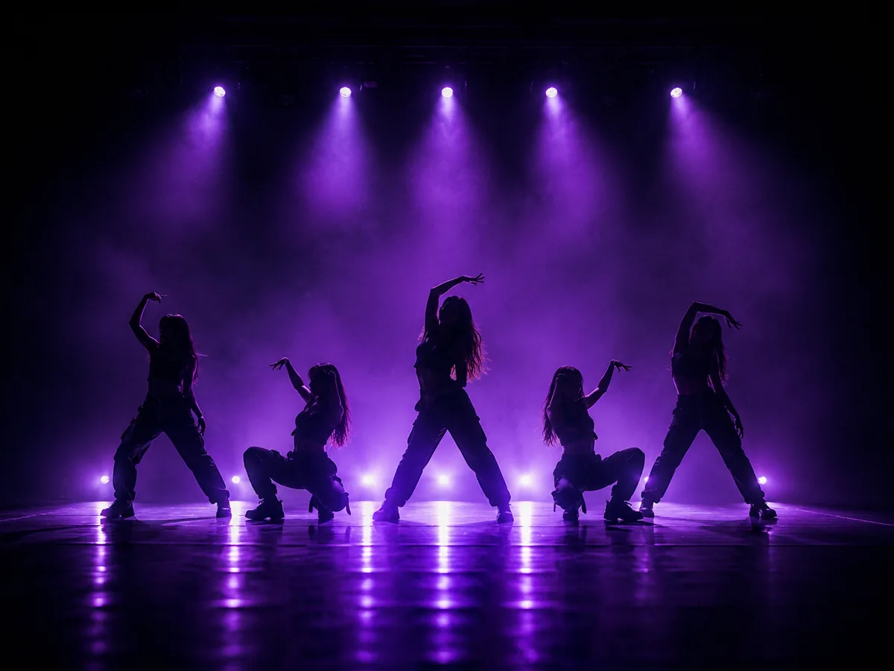

Женская хореография для тех, кому давно хотелось — и всё казалось, что уже поздно или не к кому идти. Собираем группу из ровесниц, с нуля, в возрасте от 25 до 45 лет.

Lady style — женское танцевальное направление, где главное не количество движений, а то, как они поданы. Работа с корпусом и руками, пластика, походка, взгляд, умение держать паузу. Связки здесь обычно не самые сложные технически, но требуют присвоенности: одно и то же движение у двух человек выглядит совершенно по-разному.
Название пишут как lady style, леди стайл, леди-стайл или слитно ледистайл — речь всегда об одном направлении, так что искать можно любым написанием.
Это не про «возрастную группу» и не про упрощённую программу. Это про то, с кем вы стоите в одном зале.
До сих пор в ONE OF STUDIO было два набора: K-Pop для 12–25 лет и Choreo для 16–30. Взрослым женщинам, которые писали нам после тридцати, мы честно предлагали только индивидуальные занятия — потому что приходить в группу, где половине участниц по шестнадцать, комфортно далеко не всем.
Lady style 25+ решает именно это. Группа собирается из женщин 25–45 лет, чтобы заниматься рядом с ровесницами. Если вы откладывали танцы годами с мыслью «уже поздно» — это направление сделано ровно под вас.
Girly style легче и игривее, ближе к поп-хореографии; он у нас уже есть — внутри Choreo. Lady style взрослее: меньше беготни, больше пластики и характера. Разница не в сложности, а в интонации.
High heels — это танец именно на каблуках, обувь там часть техники. В lady style каблуки возможны, но не обязательны, и упор идёт на пластику, а не на работу со стопой в туфлях.
Разные вещи. Стрип-пластика строится вокруг партерной работы и откровенной подачи. Lady style — сценическое направление: его танцуют одетыми, в зале и на площадке, и он ближе к обычной хореографии, чем к клубному формату.
Да, и это самый частый сценарий. Танцевальный опыт, растяжка и физическая форма не требуются: всё это набирается по ходу. Связки разбираются медленно и по частям, а группа новая — значит, все начинают одновременно и никто не догоняет тех, кто занимается третий год.
Из вещей на первое занятие: удобная одежда, в которой не жалко сесть на пол, сменная обувь и вода.
Группа будет заниматься по воскресеньям 18:00–19:30 в Хабаровске на ул. Комсомольская, 78 — один раз в неделю по 1,5 часа.
Направление ведёт Ольга Шах — танцор и хореограф с опытом в танце более десяти лет. Группа сейчас формируется.
Как попасть в первый состав: напишите нам в любой мессенджер и скажите, что интересует lady style. Мы внесём вас в предварительный список и сообщим о старте раньше, чем информация появится на сайте. Ни к чему не обязывает и ничего не стоит.
Да, мы как раз открываем такое направление. Lady style в ONE OF STUDIO собирается специально для взрослых женщин — от 25 до 45 лет. До сих пор у студии были группы 12–25 и 16–30 лет, и тем, кто старше, мы могли предложить только индивидуальные занятия. Теперь будет группа.
Женское танцевальное направление: пластика, работа с корпусом и руками, походка, взгляд и подача. Это не столько про сложные связки, сколько про то, как вы себя чувствуете и как это читается со стороны. Пишут по-разному — lady style, леди стайл, леди-стайл, слитно ледистайл, — речь об одном и том же.
Girly style — более лёгкий и игривый, ближе к поп-хореографии, он у нас идёт внутри направления Choreo. Lady style взрослее и спокойнее: меньше беготни, больше пластики, характера и работы с образом. Это разница не в сложности, а в интонации.
Формат обуви определим вместе с преподавателем при запуске группы. Базово достаточно удобной обуви для зала, каблуки не обязательны — high heels это отдельное направление, и мы не будем выдавать одно за другое.
Да, группа рассчитана на женщин от 25 до 45 лет. Можно начать и в 30, и в 35, и в 40 — опыт не требуется.
Нет. Растяжка и выносливость набираются на занятиях, а не требуются на входе. Начать можно с нуля и после любого перерыва — хоть в двадцать лет, хоть после двадцати лет без спорта.
Абонемент — 3 000 ₽ в месяц: одно занятие в неделю по 1,5 часа, по воскресеньям. Разовое посещение — 800 ₽. Воскресенье 18:00–19:30, ул. Комсомольская, 78. Пробное занятие бесплатное до 31 декабря 2026 года, дальше 300 ₽ — и эти 300 ₽ не берутся, если сразу оформляешь абонемент.
Напишите нам в любой мессенджер и скажите, что интересует lady style. Мы внесём вас в предварительный список и сообщим о старте раньше, чем информация появится на сайте. Это ни к чему не обязывает.
Напишите — внесём вас в список и сообщим о старте группы. Первое занятие в студии всегда бесплатное.